トップ ガイド クラフトジンのギフト
載せている銘柄
公式の価格が分かる 楽天市場・Amazon・Yahoo!ショッピングのどれかで、実際に商品が出ることを確かめた 500ml以上・度数37.5%以上のジン 並び順
世界的コンテストの最高賞の数。World Gin Awards の部門ごとの世界最高賞 World's Best と、SFWSC の Best Overall Gin
TWSC の最高金賞の数 → 金賞 → 銀賞 → 銅賞 すべて同じなら、安い順 TWSC は、出品名と度数から銘柄に結び付けられた受賞だけを数えています。受賞の全件を見る
並び順には使わない受賞（World Gin Awards の金賞など）も、灰色の札で表示しています。
予算ごとの本数と、受賞の記録があるもの 〜3,999円
受賞あり 31 本
受賞なし 25 本
4,000〜5,999円
受賞あり 42 本
受賞なし 30 本
6,000円以上
受賞あり 8 本
受賞なし 14 本
条件を満たす150本を、公式の価格を税込にした額で分けたもの。81蒸溜所の銘柄です。受賞は TWSC の2019〜2026年と、世界的コンテストの最高賞を数えています。
予算 〜3,999円 56本 この価格帯で条件を満たすのは56本 、うち受賞の記録があるのは31本 です。並び順は受賞の上位からで、同じなら安い順です。価格は公式の価格を税込に揃えたもので、実際の販売価格は店によって違います。
1 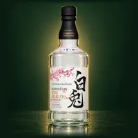
白兎プレミアム 松井酒造・ 鳥取県・ 47%・700ml 2025年 WGA World's Best・Contemporary Style Gin部門 2025 WGA Country Winner（日本代表、Matsui Gin The Hakuto Premium） 2024 WGA Gold 取扱を確かめた店 楽天 Amazon Yahoo! 蒸溜所にふるさと納税の返礼品あり ¥3,960 税込 2 クラフトジン瀬戸内 -甘夏- SETOUCHI DISTILLERY・ 広島県・ 47%・700ml TWSC 最高金1 TWSC 金1 TWSC 銀1 2026 IWSC ジン部門 金賞 2025 フェミナリーズ世界ワインコンクール 日本産蒸留酒部門 金賞 取扱を確かめた店 楽天 Amazon Yahoo! 蒸溜所にふるさと納税の返礼品あり ¥2,750 税込 3 クラフトジン瀬戸内 -檸檬- SETOUCHI DISTILLERY・ 広島県・ 47%・700ml TWSC 金4 TWSC 銀1 2025 WGA Contemporary Style Gold 2025 IWSC ジン部門 金賞 取扱を確かめた店 楽天 Amazon Yahoo! 蒸溜所にふるさと納税の返礼品あり ¥2,420 税込 4 OGIGIN想（オリジナル） 小城蒸溜所・ 佐賀県・ 45%・700ml TWSC 金2 TWSC 銀1 TWSC 銅1 取扱を確かめた店 楽天 Amazon Yahoo! 蒸溜所にふるさと納税の返礼品あり ¥2,800 税込 5 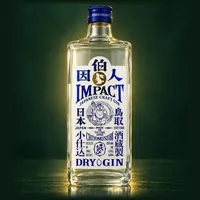
千代むすびクラフト・ジン 因伯人（IMPACT） 千代むすび酒造・ 鳥取県・ 47%・700ml TWSC 金1 TWSC 銀2 TWSC 銅3 2024 The Gin Masters Master Medal 取扱を確かめた店 楽天 Amazon Yahoo! 価格欄の記載：¥3,080（税込・公式）／箱入り¥3,300（税込・公式） ¥3,080 税込 6 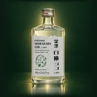
黒澤 白樺GIN 黒澤酒造・ 長野県・ 40%・500ml TWSC 金1 TWSC 銀1 TWSC 銅1 取扱を確かめた店 楽天 Yahoo! 蒸溜所にふるさと納税の返礼品あり ¥3,300 税込 7 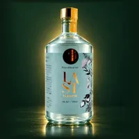
LAST ELYSIUM 東京リバーサイド蒸溜所・ 東京都・ 42%・700ml TWSC 金1 TWSC 銀1 TWSC 銅1 2026 WGA Country Winner Gold（日本最高賞）（Contemporary Style Gin 部門） 2024 IWSC 金賞 取扱を確かめた店 楽天 Amazon Yahoo! ¥3,850 税込 8 KOMASA GIN 桜島小みかん 小正醸造・ 鹿児島県・ 45%・500ml TWSC 金1 TWSC 銀1 TWSC 銅1 取扱を確かめた店 楽天 Amazon Yahoo! 蒸溜所にふるさと納税の返礼品あり ¥3,850 税込 9 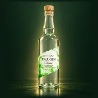
AWA GIN クラシック 日新酒類・ 徳島県・ 45%・700ml TWSC 金1 TWSC 銀1 TWSC 銅1 取扱を確かめた店 楽天 Amazon Yahoo! 蒸溜所にふるさと納税の返礼品あり ¥3,850 税込 10 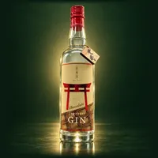
赤鳥居 ショコラ 光武酒造場・ 佐賀県・ 45%・700ml TWSC 金1 TWSC 銀1 取扱を確かめた店 楽天 Amazon Yahoo! 蒸溜所にふるさと納税の返礼品あり ¥3,190 税込 残りの46本も見る 11 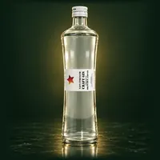
ネイビーストレングス クラフトジン 石川酒造場・ 沖縄県・ 57%・500ml TWSC 金1 TWSC 銀1 取扱を確かめた店 楽天 Amazon Yahoo! 蒸溜所にふるさと納税の返礼品あり ¥3,930 税込 12 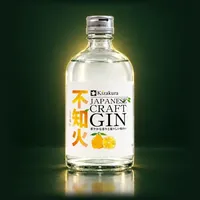
黄桜 クラフトジン 不知火（しらぬい） 黄桜 丹波蒸溜所・ 兵庫県・ 40%・500ml TWSC 金1 取扱を確かめた店 楽天 Amazon Yahoo! 価格欄の記載：¥3,500（税込・公式オンラインショップ、箱入り）／参考小売価格 ¥3,000（税別） ¥3,500 税込 13 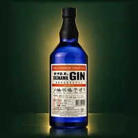
まさひろオキナワジン RECIPE 02 まさひろ酒造・ 沖縄県・ 47%・700ml TWSC 金1 取扱を確かめた店 楽天 Amazon Yahoo! 蒸溜所にふるさと納税の返礼品あり ¥3,520 税込 14 135° East Hyogo Dry Gin 海峡蒸溜所・ 兵庫県・ 42%・700ml TWSC 銀3 TWSC 銅1 取扱を確かめた店 楽天 Amazon Yahoo! ¥2,530 税込 15 赤鳥居 オリジナル 光武酒造場・ 佐賀県・ 45%・700ml TWSC 銀2 TWSC 銅4 2021 OMOTENASHIセレクション 金賞 取扱を確かめた店 楽天 Amazon Yahoo! 蒸溜所にふるさと納税の返礼品あり ¥2,420 税込 16 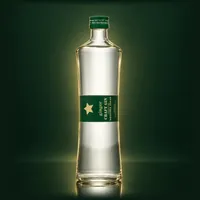
ジンジャー クラフトジン 石川酒造場・ 沖縄県・ 45%・500ml TWSC 銀2 取扱を確かめた店 楽天 Amazon Yahoo! 蒸溜所にふるさと納税の返礼品あり ¥2,580 税込 17 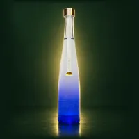
夕凪GIN（JAPANESE CRAFT GIN） 西野金陵・ 香川県・ 40%・500ml TWSC 銀2 取扱を確かめた店 楽天 ¥3,850 税込 18 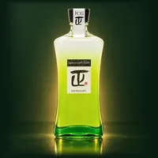
ジャパニーズ クラフト ジン マサハル（Japanese craft Gin MASAHARU） やまや蒸留所・ 宮崎県・ 47%・720ml TWSC 銀1 TWSC 銅1 取扱を確かめた店 楽天 Amazon Yahoo! 蒸溜所にふるさと納税の返礼品あり ¥3,850 税込 19 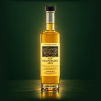
長崎出島ジン 伝之進 1812 杵の川・ 長崎県・ 40%・510ml TWSC 銀1 取扱を確かめた店 楽天 ¥2,970 税込 20 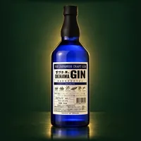
まさひろオキナワジン RECIPE 01 まさひろ酒造・ 沖縄県・ 47%・700ml TWSC 銀1 取扱を確かめた店 楽天 Amazon Yahoo! 蒸溜所にふるさと納税の返礼品あり ¥3,520 税込 21 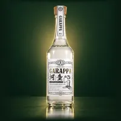
GARAPPA #01 CRAFT GIN 山元酒造・ 鹿児島県・ 47%・720ml TWSC 銀1 2020 Hong Kong International Wine & Spirits Competition Silver Medal 取扱を確かめた店 楽天 Amazon Yahoo! 蒸溜所にふるさと納税の返礼品あり ¥3,630 税込 22 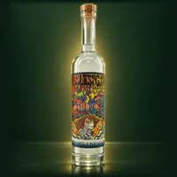
NAKATSU GIN（ドライジン） 中津川蒸留所・ 岐阜県・ 50%・500ml TWSC 銀1 取扱を確かめた店 楽天 Amazon Yahoo! ¥3,850 税込 23 翠（SUI） サントリー大阪工場・ 大阪府・ 40%・700ml TWSC 銅2 取扱を確かめた店 楽天 Amazon Yahoo! 蒸溜所にふるさと納税の返礼品あり ¥1,518 税込 24 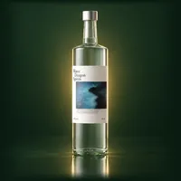
Water Dragon Spirits（ウォータードラゴンスピリッツ） Distillery Water Dragon・ 静岡県・ 47%・700ml TWSC 銅2 取扱を確かめた店 楽天 Amazon Yahoo! 蒸溜所にふるさと納税の返礼品あり ¥3,333 税込 25 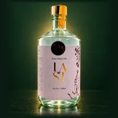
LAST ELEGANT 東京リバーサイド蒸溜所・ 東京都・ 47%・700ml TWSC 銅2 2021 IWSC Gold Outstanding 2021 WGA Country Winner 取扱を確かめた店 楽天 Amazon Yahoo! ¥3,850 税込 26 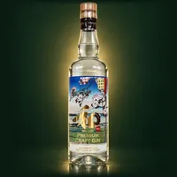
和GIN（プレミアムクラフトジン） 明利酒類・ 茨城県・ 45%・700ml TWSC 銅2 取扱を確かめた店 楽天 Amazon Yahoo! 蒸溜所にふるさと納税の返礼品あり ¥3,850 税込 27 香立 -KODACHI- 富士白蒸留所(中野BC)・ 和歌山県・ 47%・700ml TWSC 銅1 取扱を確かめた店 楽天 Amazon Yahoo! 蒸溜所にふるさと納税の返礼品あり 価格欄の記載：¥2,970（税込・公式、箱なし）／箱入りは¥3,850（税込・公式） ¥2,970 税込 28 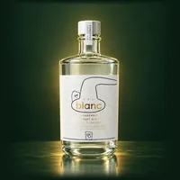
blanc（ブラン） オリエンタル金沢蒸溜所・ 石川県・ 40%・500ml TWSC 銅1 取扱を確かめた店 楽天 Yahoo! 蒸溜所にふるさと納税の返礼品あり ¥3,300 税込 29 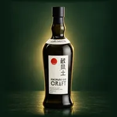
日の丸ジン 蔵風土（くらふうど） 八郷蒸溜所(木内酒造)・ 茨城県・ 47%・700ml TWSC 銅1 取扱を確かめた店 楽天 Amazon Yahoo! 蒸溜所にふるさと納税の返礼品あり ¥3,850 税込 30 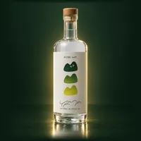
KOBE GIN YAMA 神戸蒸溜所・ 兵庫県・ 43%・700ml TWSC 銅1 2024 IWSC銅賞 取扱を確かめた店 楽天 Amazon Yahoo! 蒸溜所にふるさと納税の返礼品あり ¥3,850 税込 31 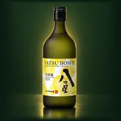
八代不知火蔵 八つ星 和柑橘 八代不知火蔵・ 熊本県・ 43%・700ml TWSC 銅1 取扱を確かめた店 楽天 Amazon Yahoo! 蒸溜所にふるさと納税の返礼品あり ¥3,850 税込 32 白兎-HAKUTO-（マツイ ジン 白兎） 松井酒造・ 鳥取県・ 40%・700ml 2022 WGA Gold 2023 WGA Silver 取扱を確かめた店 楽天 Amazon Yahoo! 蒸溜所にふるさと納税の返礼品あり ¥1,496 税込 33 クラフトジン 歌川（うたがわ） 美峰酒類・ 群馬県・ 40%・500ml Gin-DBに受賞の記録なし 取扱を確かめた店 楽天 Amazon Yahoo! 蒸溜所にふるさと納税の返礼品あり ¥1,592 税込 34 クラフトジン歌川 生姜 美峰酒類・ 群馬県・ 40%・500ml Gin-DBに受賞の記録なし 取扱を確かめた店 楽天 Amazon 蒸溜所にふるさと納税の返礼品あり ¥1,606 税込 35 クラフトジン歌川 ゆず 美峰酒類・ 群馬県・ 40%・500ml Gin-DBに受賞の記録なし 取扱を確かめた店 楽天 Amazon 蒸溜所にふるさと納税の返礼品あり ¥1,606 税込 36 京都ジン 京都みやこ蒸溜所・ 京都府・ 40%・700ml Gin-DBに受賞の記録なし 取扱を確かめた店 楽天 Amazon Yahoo! 蒸溜所にふるさと納税の返礼品あり 購入前の注意：京都府内限定販売（公式FAQ） ¥1,980 税込 37 ジャパニーズクラフトジン 樹々（JUJU） 濵田酒造・ 鹿児島県・ 38%・700ml Gin-DBに受賞の記録なし 取扱を確かめた店 楽天 Amazon Yahoo! 蒸溜所にふるさと納税の返礼品あり ¥2,201 税込 38 黒澤 ＆SOBA GIN 黒澤酒造・ 長野県・ 45%・700ml Gin-DBに受賞の記録なし 取扱を確かめた店 楽天 Yahoo! 蒸溜所にふるさと納税の返礼品あり ¥2,750 税込 39 槙 -KOZUE- 富士白蒸留所(中野BC)・ 和歌山県・ 47%・700ml 2018 第8回リヨン・インターナショナル・コンクール リキュール・スピリッツ部門 金賞 取扱を確かめた店 楽天 Amazon Yahoo! 蒸溜所にふるさと納税の返礼品あり ¥2,970 税込 40 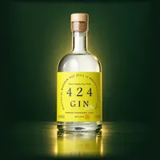
424GIN -Juniper berry only- 若潮酒造・ 鹿児島県・ 42.4%・500ml 2022 IWSC Bronze Medal 取扱を確かめた店 楽天 Amazon Yahoo! ¥2,970 税込 41 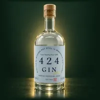
424GIN -Classic botanicals- 若潮酒造・ 鹿児島県・ 42.4%・500ml Gin-DBに受賞の記録なし 取扱を確かめた店 楽天 Amazon Yahoo! ¥2,970 税込 42 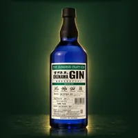
まさひろオキナワジン RECIPE 03 まさひろ酒造・ 沖縄県・ 47%・700ml Gin-DBに受賞の記録なし 取扱を確かめた店 楽天 Yahoo! 蒸溜所にふるさと納税の返礼品あり ¥3,200 税込 43 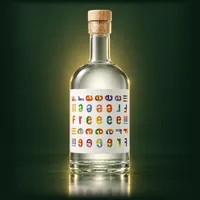
Freeee!!! Volume 2 朝倉蒸溜所(篠崎)・ 福岡県・ 46%・500ml Gin-DBに受賞の記録なし 取扱を確かめた店 楽天 Amazon Yahoo! ¥3,205 税込 44 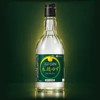
黄桜 クラフトジン 木頭ゆず 黄桜 丹波蒸溜所・ 兵庫県・ 40%・500ml Gin-DBに受賞の記録なし 取扱を確かめた店 楽天 Amazon Yahoo! ¥3,300 税込 45 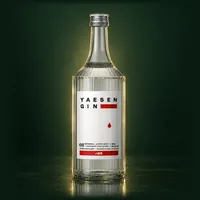
YAESEN GIN 01（八重泉ジン01） 八重泉酒造・ 沖縄県・ 40%・700ml Gin-DBに受賞の記録なし 取扱を確かめた店 楽天 Amazon Yahoo! ¥3,300 税込 46 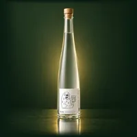
005 Sauna Gin PLOW・ 茨城県・ 40%・500ml Gin-DBに受賞の記録なし 取扱を確かめた店 Yahoo! ¥3,500 税込 47 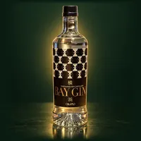
BAY GIN（ベイジン） 横浜ジン蒸溜所・ 神奈川県・ 47%・700ml Gin-DBに受賞の記録なし 取扱を確かめた店 楽天 ¥3,520 税込 48 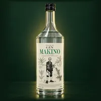
MAKINO GIN（マキノジン） 司牡丹酒造・ 高知県・ 45%・700ml 2024 IWSC（International Wine and Spirits Competition） Silver 取扱を確かめた店 楽天 Amazon Yahoo! 蒸溜所にふるさと納税の返礼品あり ¥3,700 税込 49 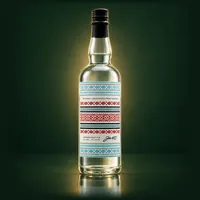
Jin40 - ASAKURA CRAFT GIN 朝倉蒸溜所(篠崎)・ 福岡県・ 45%・750ml Gin-DBに受賞の記録なし 取扱を確かめた店 楽天 Amazon Yahoo! ¥3,847 税込 50 日の丸ジン 蔵風土 東京蒸溜所(木内酒造)・ 東京都・ 47%・700ml Gin-DBに受賞の記録なし 取扱を確かめた店 楽天 Amazon Yahoo! ¥3,850 税込 51 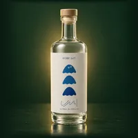
KOBE GIN UMI 神戸蒸溜所・ 兵庫県・ 43%・700ml 2024 IWSC銅賞 取扱を確かめた店 楽天 Amazon Yahoo! 蒸溜所にふるさと納税の返礼品あり ¥3,850 税込 52 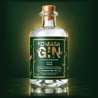
KOMASA GIN ほうじ茶 小正醸造・ 鹿児島県・ 45%・500ml Gin-DBに受賞の記録なし 取扱を確かめた店 楽天 Amazon Yahoo! 蒸溜所にふるさと納税の返礼品あり ¥3,850 税込 53 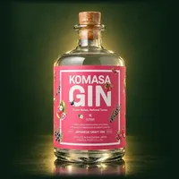
KOMASA GIN 苺 小正醸造・ 鹿児島県・ 45%・500ml Gin-DBに受賞の記録なし 取扱を確かめた店 楽天 Amazon Yahoo! 蒸溜所にふるさと納税の返礼品あり ¥3,850 税込 54 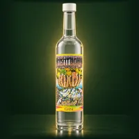
NAKATSU GIN 南信州シトラス 中津川蒸留所・ 岐阜県・ 50%・500ml Gin-DBに受賞の記録なし 取扱を確かめた店 楽天 購入前の注意：限定シリーズ ¥3,850 税込 55 京都ジン ハイクラス 京都みやこ蒸溜所・ 京都府・ 46%・700ml Gin-DBに受賞の記録なし 取扱を確かめた店 楽天 Amazon Yahoo! 蒸溜所にふるさと納税の返礼品あり 購入前の注意：京都府内限定販売（公式FAQ） ¥3,960 税込 56 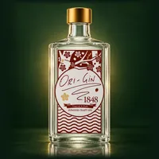
JAPANESE CRAFT GIN ORI-GiN 1848 瑞穂酒造・ 沖縄県・ 48%・500ml 2021 IWSC ジンカテゴリ Silver Medal 2019 IWSC ジンカテゴリ Bronze Medal 取扱を確かめた店 楽天 Amazon Yahoo! 蒸溜所にふるさと納税の返礼品あり ¥3,960 税込 予算 4,000〜5,999円 72本 この価格帯で条件を満たすのは72本 、うち受賞の記録があるのは42本 です。並び順は受賞の上位からで、同じなら安い順です。価格は公式の価格を税込に揃えたもので、実際の販売価格は店によって違います。
1 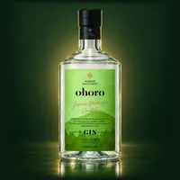
ohoro GIN Standard ニセコ蒸溜所・ 北海道・ 47%・700ml 2024年 WGA World's Best・Classic Gin部門 TWSC 金1 TWSC 銀2 TWSC 銅1 2026 IWSC Gold Outstanding（98点・Classic Gin） 2024 SFWSC Double Gold 取扱を確かめた店 楽天 Amazon Yahoo! 蒸溜所にふるさと納税の返礼品あり ¥4,950 税込 2 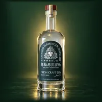
MAIRINGEN FRESH CRAFT GIN 京丹後舞輪源蒸留所・ 京都府・ 47%・700ml 2025年 SFWSC Best Overall Gin 取扱を確かめた店 楽天 Amazon Yahoo! 蒸溜所にふるさと納税の返礼品あり ¥5,610 税込 3 京都ジン 輪廻 Old Tom MIKE 大文字蒸溜所・ 京都府・ 43%・720ml TWSC 最高金2 取扱を確かめた店 楽天 Amazon Yahoo! 蒸溜所にふるさと納税の返礼品あり ¥5,280 税込 4 ROKU〈六〉 サントリー大阪工場・ 大阪府・ 47%・700ml TWSC 最高金1 TWSC 金3 TWSC 銀2 TWSC 銅1 2025 WGA 金賞（Gold） 2025 ISC "Best Distilled Gin" トロフィー 取扱を確かめた店 楽天 Amazon Yahoo! 蒸溜所にふるさと納税の返礼品あり ¥4,400 税込 5 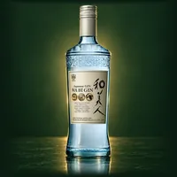
和美人（Japanese GIN 和美人） マルス津貫蒸溜所(本坊酒造)・ 鹿児島県・ 47%・700ml TWSC 最高金1 TWSC 金1 TWSC 銀1 TWSC 銅2 2026 SFWSC 最優秀金賞（Double Gold）（ジン部門） 2024 ISC Double Gold 取扱を確かめた店 楽天 Amazon Yahoo! 蒸溜所にふるさと納税の返礼品あり 価格欄の記載：¥4,400（税込・公式希望小売、化粧箱入）／¥4,180（瓶のみ） ¥4,400 税込 6 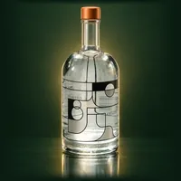
OSAKA GIN ORIJIN 三國蒸溜所・ 大阪府・ 45%・750ml TWSC 最高金1 2025 IWSC Gold Outstanding（98点）（Classic / Traditional Gin） 取扱を確かめた店 楽天 Amazon ¥5,500 税込 7 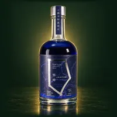
明時（AKATOKI）TANZANITE（タンザナイト） 十勝平野蒸溜所・ 北海道・ 47%・500ml TWSC 最高金1 取扱を確かめた店 楽天 蒸溜所にふるさと納税の返礼品あり 価格欄の記載：¥5,885（税込・化粧箱入り希望小売価格）／公式ショップ箱なし ¥5,500 購入前の注意：数量限定品。TWSC2026 最高金賞 ¥5,885 税込 8 油津吟（YUZU GIN） 京屋酒造・ 宮崎県・ 47%・750ml TWSC 金4 TWSC 銀1 取扱を確かめた店 楽天 Amazon Yahoo! 蒸溜所にふるさと納税の返礼品あり ¥5,500 税込 9 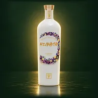
HINATA（ヒナタ） 京屋酒造・ 宮崎県・ 47%・750ml TWSC 金2 TWSC 銀2 TWSC 銅2 取扱を確かめた店 楽天 Amazon Yahoo! 蒸溜所にふるさと納税の返礼品あり ¥5,500 税込 10 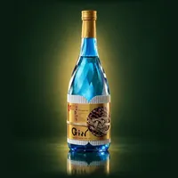
Japanese Craft Gin よきつき（令月） 梅ヶ枝酒造・ 長崎県・ 40%・720ml TWSC 金1 TWSC 銀3 TWSC 銅1 取扱を確かめた店 楽天 Amazon Yahoo! 蒸溜所にふるさと納税の返礼品あり 価格欄の記載：¥4,180（税込・公式／化粧箱入り720ml） ¥4,180 税込 残りの62本も見る 11 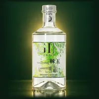
Japanese Craft Gin 棘玉（TOGEDAMA） 武蔵野蒸留所・ 埼玉県・ 47%・700ml TWSC 金1 TWSC 銀2 TWSC 銅1 2023 WGA カントリーウィナー金賞 2022 IWSC 金賞 取扱を確かめた店 楽天 Amazon Yahoo! 蒸溜所にふるさと納税の返礼品あり ¥4,950 税込 12 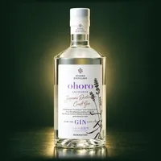
ohoro GIN Limited Edition ラベンダー ニセコ蒸溜所・ 北海道・ 47%・700ml TWSC 金1 TWSC 銀2 取扱を確かめた店 楽天 Amazon Yahoo! 蒸溜所にふるさと納税の返礼品あり ¥5,500 税込 13 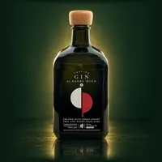
南部美人クラフトジン 南部美人・ 岩手県・ 40%・700ml TWSC 金1 TWSC 銀1 取扱を確かめた店 楽天 Amazon Yahoo! 蒸溜所にふるさと納税の返礼品あり ¥5,390 税込 14 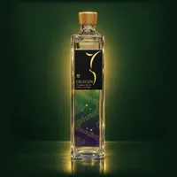
OGIGIN想（プレミアム） 小城蒸溜所・ 佐賀県・ 45%・700ml TWSC 金1 TWSC 銅3 取扱を確かめた店 楽天 Amazon Yahoo! 蒸溜所にふるさと納税の返礼品あり ¥4,800 税込 15 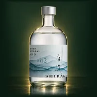
KOBE HERBAL GIN 白風（しらかぜ） #02 白鶴酒造 神戸御影蒸溜所・ 兵庫県・ 45%・700ml TWSC 金1 TWSC 銅1 取扱を確かめた店 楽天 Amazon Yahoo! 蒸溜所にふるさと納税の返礼品あり ¥4,290 税込 16 IWAI GIN 野沢温泉蒸留所・ 長野県・ 42%・500ml TWSC 金1 TWSC 銅1 2026 SFWSC ダブルゴールド 取扱を確かめた店 楽天 Amazon Yahoo! 蒸溜所にふるさと納税の返礼品あり ¥4,850 税込 17 山椒のGIN / Japanese Pepper AGCT・ 静岡県・ 42%・500ml TWSC 金1 取扱を確かめた店 楽天 Yahoo! ¥4,300 税込 18 SANABURI Prototype_02（ジン） 早苗饗蒸留所・ 秋田県・ 47%・500ml TWSC 金1 取扱を確かめた店 楽天 Amazon Yahoo! 蒸溜所にふるさと納税の返礼品あり 購入前の注意：TWSC2026 金賞。実験酒シリーズとして数量限定で発売 ¥4,400 税込 19 SENJO クラフトジン SAKURA 仙醸・ 長野県・ 45%・700ml TWSC 金1 取扱を確かめた店 楽天 Yahoo! 蒸溜所にふるさと納税の返礼品あり ¥4,620 税込 20 雪の窓 ドライジン 丹丘蒸留所・ 北海道・ 45%・500ml TWSC 金1 2026 The Gin Masters 金賞（Gold）（スーパープレミアム部門） 取扱を確かめた店 楽天 Amazon Yahoo! 蒸溜所にふるさと納税の返礼品あり ¥4,950 税込 21 明時（AKATOKI）ORIGIN（オリジン） 十勝平野蒸溜所・ 北海道・ 47%・500ml TWSC 金1 取扱を確かめた店 楽天 蒸溜所にふるさと納税の返礼品あり ¥4,950 税込 22 naturadistill 固有種蒸溜酒 naturadistill・ 福島県・ 47%・500ml TWSC 金1 2026 WGA Bronze（Signature Botanical 部門） 取扱を確かめた店 楽天 Amazon Yahoo! 蒸溜所にふるさと納税の返礼品あり ¥4,980 税込 23 赤鳥居 プレミアム 光武酒造場・ 佐賀県・ 45%・700ml TWSC 銀3 TWSC 銅2 取扱を確かめた店 楽天 Amazon Yahoo! 蒸溜所にふるさと納税の返礼品あり ¥5,060 税込 24 The Japanese Craft GIN 黄金井 黄金井酒造・ 神奈川県・ 43%・500ml TWSC 銀2 TWSC 銅1 取扱を確かめた店 楽天 Amazon Yahoo! 蒸溜所にふるさと納税の返礼品あり ¥5,280 税込 25 NOZAWA GIN 野沢温泉蒸留所・ 長野県・ 45%・500ml TWSC 銀2 2026 SFWSC ダブルゴールド 2024 WGA Country Winner Gold（London Dry Gin部門 日本代表） 取扱を確かめた店 楽天 Amazon Yahoo! 蒸溜所にふるさと納税の返礼品あり ¥4,850 税込 26 CLASSIC DRY GIN 野沢温泉蒸留所・ 長野県・ 48%・500ml TWSC 銀2 2024 WGA Gold（Contemporary Style Gin） 取扱を確かめた店 楽天 Amazon Yahoo! 蒸溜所にふるさと納税の返礼品あり ¥4,850 税込 27 TOKYO SPICE GIN 東京八王子蒸溜所・ 東京都・ 41%・700ml TWSC 銀2 取扱を確かめた店 楽天 Amazon Yahoo! 蒸溜所にふるさと納税の返礼品あり ¥5,775 税込 28 クラフトジン 伊勢神（ISE GIN） 伊勢萬・ 三重県・ 47%・700ml TWSC 銀1 TWSC 銅3 2026 IWSC Gold（Contemporary Gin部門） 取扱を確かめた店 楽天 Amazon Yahoo! 蒸溜所にふるさと納税の返礼品あり ¥4,850 税込 29 TOKYO HACHIO GIN ELDER FLOWER 東京八王子蒸溜所・ 東京都・ 40%・500ml TWSC 銀1 TWSC 銅1 取扱を確かめた店 楽天 Amazon Yahoo! 蒸溜所にふるさと納税の返礼品あり 価格欄の記載：¥4,500（税込・公式EC、ギフト用化粧箱付） ¥4,500 税込 30 SHISO GIN 野沢温泉蒸留所・ 長野県・ 41%・500ml TWSC 銀1 TWSC 銅1 2026 IWSC Gold（95点） 2026 SFWSC 金賞 取扱を確かめた店 楽天 Amazon Yahoo! 蒸溜所にふるさと納税の返礼品あり ¥4,850 税込 31 京都ジン 輪廻 The Origin 大文字蒸溜所・ 京都府・ 43%・720ml TWSC 銀1 TWSC 銅1 取扱を確かめた店 楽天 Amazon Yahoo! 蒸溜所にふるさと納税の返礼品あり ¥5,060 税込 32 ohoro GIN Limited Edition ニホンハッカ ニセコ蒸溜所・ 北海道・ 47%・700ml TWSC 銀1 TWSC 銅1 2025 WGA Country Winner Gold（Signature Botanical部門 日本代表） 取扱を確かめた店 楽天 Amazon Yahoo! 蒸溜所にふるさと納税の返礼品あり ¥5,500 税込 33 JIN7 series 00 宮ヶ浜蒸溜所(大山甚七商店)・ 鹿児島県・ 47%・700ml TWSC 銀1 取扱を確かめた店 楽天 Amazon Yahoo! 蒸溜所にふるさと納税の返礼品あり ¥4,400 税込 34 和美人 The Forest マルス津貫蒸溜所(本坊酒造)・ 鹿児島県・ 47%・700ml TWSC 銀1 取扱を確かめた店 楽天 Amazon Yahoo! 蒸溜所にふるさと納税の返礼品あり 価格欄の記載：¥4,620（税込・公式希望小売、化粧箱入） 購入前の注意：限定 ¥4,620 税込 35 GIN HEART 春 [Haru] 佐多宗二商店・ 鹿児島県・ 46%・720ml TWSC 銀1 取扱を確かめた店 楽天 Amazon Yahoo! ¥5,830 税込 36 KOBE HERBAL GIN 白風（しらかぜ） #01 白鶴酒造 神戸御影蒸溜所・ 兵庫県・ 45%・700ml TWSC 銅2 取扱を確かめた店 楽天 Amazon Yahoo! 蒸溜所にふるさと納税の返礼品あり ¥4,290 税込 37 JIN7 series 01 宮ヶ浜蒸溜所(大山甚七商店)・ 鹿児島県・ 47%・700ml TWSC 銅1 取扱を確かめた店 楽天 Amazon Yahoo! 蒸溜所にふるさと納税の返礼品あり ¥4,400 税込 38 黄桜クラフトジン 花物語 黄桜 丹波蒸溜所・ 兵庫県・ 47%・700ml TWSC 銅1 取扱を確かめた店 楽天 Amazon Yahoo! 価格欄の記載：¥4,500（税込・公式オンラインショップ、箱入り） ¥4,500 税込 39 TOKYO HACHIO GIN CLASSIC 東京八王子蒸溜所・ 東京都・ 45%・500ml TWSC 銅1 取扱を確かめた店 楽天 Amazon Yahoo! 蒸溜所にふるさと納税の返礼品あり 価格欄の記載：¥4,700（税込・公式EC、ギフト用化粧箱付。化粧箱無しの公式価格は掲載なし） ¥4,700 税込 40 道後ジン 水口酒造・ 愛媛県・ 40%・500ml TWSC 銅1 取扱を確かめた店 楽天 Amazon Yahoo! 蒸溜所にふるさと納税の返礼品あり ¥5,500 税込 41 スティルダムジン リスボン（白ラベル） 楠乃花蒸溜所・ 佐賀県・ 45%・700ml TWSC 銅1 取扱を確かめた店 楽天 Amazon Yahoo! 蒸溜所にふるさと納税の返礼品あり ¥5,500 税込 42 火の帆 KIBOU（きぼう） 積丹スピリット・ 北海道・ 45%・500ml TWSC 銅1 取扱を確かめた店 楽天 Amazon Yahoo! 蒸溜所にふるさと納税の返礼品あり ¥5,940 税込 43 Yuzu Cool クラフトジン 京屋酒造・ 宮崎県・ 47%・700ml Gin-DBに受賞の記録なし 取扱を確かめた店 楽天 Amazon Yahoo! 蒸溜所にふるさと納税の返礼品あり ¥4,125 税込 44 DOJA 富士白蒸留所(中野BC)・ 和歌山県・ 47%・700ml Gin-DBに受賞の記録なし 取扱を確かめた店 楽天 Amazon Yahoo! 蒸溜所にふるさと納税の返礼品あり ¥4,180 税込 45 THE JAPANESE CRAFT GIN SAKURA やまや蒸留所・ 宮崎県・ 47%・720ml Gin-DBに受賞の記録なし 取扱を確かめた店 楽天 Amazon Yahoo! 蒸溜所にふるさと納税の返礼品あり 購入前の注意：公式ECに期間限定の表記なし（季節品かは未確認） ¥4,290 税込 46 SiCX KYOTO LEMON CITRIC ACID GIN SiCX京都東山蒸溜所・ 京都府・ 45%・500ml Gin-DBに受賞の記録なし 取扱を確かめた店 楽天 Amazon Yahoo! ¥4,378 税込 47 SiCX KYOTO SPICE MAGIC GIN SiCX京都東山蒸溜所・ 京都府・ 45%・500ml Gin-DBに受賞の記録なし 取扱を確かめた店 楽天 Amazon Yahoo! ¥4,378 税込 48 KITAYA CRAFT GIN 喜多屋・ 福岡県・ 45%・500ml 2026 Kura Master クラフトコウジスピリッツ部門 金賞 2026 IWSC スピリッツ部門 銀賞（90pts） 取扱を確かめた店 楽天 Amazon Yahoo! 蒸溜所にふるさと納税の返礼品あり ¥4,400 税込 49 OSUZU GIN（オリジナル） 尾鈴山蒸留所・ 宮崎県・ 45%・700ml Gin-DBに受賞の記録なし 取扱を確かめた店 楽天 Amazon Yahoo! 蒸溜所にふるさと納税の返礼品あり ¥4,455 税込 50 OSUZU GIN Kumquat（金柑） 尾鈴山蒸留所・ 宮崎県・ 45%・700ml Gin-DBに受賞の記録なし 取扱を確かめた店 楽天 Amazon Yahoo! 蒸溜所にふるさと納税の返礼品あり ¥4,455 税込 51 OSUZU GIN Cacao & Muscat 尾鈴山蒸留所・ 宮崎県・ 45%・700ml Gin-DBに受賞の記録なし 取扱を確かめた店 楽天 Yahoo! 蒸溜所にふるさと納税の返礼品あり 購入前の注意：限定。公式ショップで品切れ（2026年10月確認） ¥4,455 税込 52 BRONCO 20 横浜ジン蒸溜所・ 神奈川県・ 47%・500ml 2023 IWSC Bronze 取扱を確かめた店 楽天 Amazon Yahoo! ¥4,620 税込 53 クラフトジン 白天狗（しろてんぐ）／ノーマル 熊澤酒造・ 神奈川県・ 41%・700ml Gin-DBに受賞の記録なし 取扱を確かめた店 楽天 蒸溜所にふるさと納税の返礼品あり ¥4,950 税込 54 オーディナリー（オーディナリージン） Motoki蒸研・ 京都府・ 45%・500ml Gin-DBに受賞の記録なし 取扱を確かめた店 楽天 Amazon Yahoo! ¥4,950 税込 55 スティルダムジン スタンダード（赤ラベル） 楠乃花蒸溜所・ 佐賀県・ 45%・700ml Gin-DBに受賞の記録なし 取扱を確かめた店 楽天 Amazon Yahoo! 蒸溜所にふるさと納税の返礼品あり ¥4,950 税込 56 OBUSE GIN 野沢温泉蒸留所・ 長野県・ 45%・500ml Gin-DBに受賞の記録なし 取扱を確かめた店 楽天 Amazon Yahoo! 蒸溜所にふるさと納税の返礼品あり ¥5,350 税込 57 KYOTO EBISU GIN SiCX京都東山蒸溜所・ 京都府・ 45%・500ml Gin-DBに受賞の記録なし 取扱を確かめた店 楽天 Amazon Yahoo! ¥5,478 税込 58 赤鳥居 SAKE GIN 光武酒造場・ 佐賀県・ 45%・700ml Gin-DBに受賞の記録なし 取扱を確かめた店 楽天 Amazon Yahoo! 蒸溜所にふるさと納税の返礼品あり ¥5,500 税込 59 AMRTA GIN Limited Edition 02 GEEKSTILL・ 山梨県・ 40%・500ml Gin-DBに受賞の記録なし 取扱を確かめた店 楽天 Amazon Yahoo! 蒸溜所にふるさと納税の返礼品あり ¥5,500 税込 60 GOTOGIN the origin 五島つばき蒸溜所・ 長崎県・ 47%・500ml Gin-DBに受賞の記録なし 取扱を確かめた店 楽天 Yahoo! 蒸溜所にふるさと納税の返礼品あり 価格欄の記載：¥5,500（税込・公式EC）／ギフトBOX入り¥6,050（税込） ¥5,500 税込 61 JAPANESE CRAFT GIN 熊野 紀州熊野蒸溜所・ 和歌山県・ 53%・500ml Gin-DBに受賞の記録なし 取扱を確かめた店 楽天 Amazon Yahoo! 蒸溜所にふるさと納税の返礼品あり ¥5,500 税込 62 道後ジン 六媛（ろくひめ） 水口酒造・ 愛媛県・ 40%・500ml Gin-DBに受賞の記録なし 取扱を確かめた店 楽天 Amazon Yahoo! 蒸溜所にふるさと納税の返礼品あり ¥5,500 税込 63 甘夏薄荷蒸溜酒 naturadistill・ 福島県・ 47%・500ml Gin-DBに受賞の記録なし 取扱を確かめた店 楽天 Amazon Yahoo! 蒸溜所にふるさと納税の返礼品あり 購入前の注意：季節限定の第四作（2026年8月発売）。贈答用手提げ袋ありは¥5,600 ¥5,500 税込 64 COMMON（コモン）レギュラージン 虎ノ門蒸留所・ 東京都・ 46%・500ml Gin-DBに受賞の記録なし 取扱を確かめた店 楽天 Amazon Yahoo! ¥5,500 税込 65 橘花 KIKKA GIN（標準） 大和蒸溜所(油長酒造)・ 奈良県・ 59%・700ml Gin-DBに受賞の記録なし 取扱を確かめた店 楽天 Amazon Yahoo! 蒸溜所にふるさと納税の返礼品あり ¥5,500 税込 66 橘花 KIKKA GIN 朱華（はねず） 大和蒸溜所(油長酒造)・ 奈良県・ 43%・700ml Gin-DBに受賞の記録なし 取扱を確かめた店 楽天 Amazon Yahoo! 蒸溜所にふるさと納税の返礼品あり ¥5,500 税込 67 橘花 KIKKA GIN 流転（ルテン） 大和蒸溜所(油長酒造)・ 奈良県・ 47%・700ml Gin-DBに受賞の記録なし 取扱を確かめた店 楽天 Amazon Yahoo! 蒸溜所にふるさと納税の返礼品あり ¥5,500 税込 68 マキノジン プレミアム 司牡丹酒造・ 高知県・ 45%・720ml Gin-DBに受賞の記録なし 取扱を確かめた店 楽天 Amazon Yahoo! 蒸溜所にふるさと納税の返礼品あり ¥5,600 税込 69 赤丸薄荷と白樺の葉 虎ノ門蒸留所・ 東京都・ 45%・500ml Gin-DBに受賞の記録なし 取扱を確かめた店 楽天 Amazon Yahoo! 購入前の注意：限定 ¥5,940 税込 70 みかんの花 虎ノ門蒸留所・ 東京都・ 45%・500ml Gin-DBに受賞の記録なし 取扱を確かめた店 楽天 Amazon Yahoo! 購入前の注意：限定。公式ショップで売り切れ（2026年10月確認） ¥5,940 税込 71 横浜クラフトジン サクラ＆ベリー 横浜ジン蒸溜所・ 神奈川県・ 43%・500ml Gin-DBに受賞の記録なし 取扱を確かめた店 楽天 Amazon Yahoo! 購入前の注意：春限定・200本限定製造 ¥5,940 税込 72 Blue Rabbit Tokyo Dry Gin Blue Rabbit Distillery・ 東京都・ 43%・700ml Gin-DBに受賞の記録なし 取扱を確かめた店 Yahoo! ¥5,950 税込 予算 6,000円以上 22本 この価格帯で条件を満たすのは22本 、うち受賞の記録があるのは8本 です。並び順は受賞の上位からで、同じなら安い順です。価格は公式の価格を税込に揃えたもので、実際の販売価格は店によって違います。
1 クラフトジン岡山 岡山蒸溜所(宮下酒造)・ 岡山県・ 50%・700ml TWSC 金2 TWSC 銀3 TWSC 銅1 取扱を確かめた店 楽天 Amazon Yahoo! 蒸溜所にふるさと納税の返礼品あり ¥7,700 税込 2 YOHAKHU（ヨハク） 芙蓉酒造・ 長野県・ 45%・500ml TWSC 金1 TWSC 銀2 TWSC 銅1 取扱を確かめた店 楽天 Yahoo! ¥6,600 税込 3 京都ジン 輪廻 In Bloom 大文字蒸溜所・ 京都府・ 43%・720ml TWSC 金1 TWSC 銀1 取扱を確かめた店 楽天 Amazon Yahoo! 蒸溜所にふるさと納税の返礼品あり ¥6,160 税込 4 9148 #0101 STANDARD 紅櫻蒸溜所・ 北海道・ 45%・700ml TWSC 金1 TWSC 銀1 取扱を確かめた店 楽天 Amazon Yahoo! 蒸溜所にふるさと納税の返礼品あり ¥6,380 税込 5 THE HERBALIST YASO GIN EXTRA HERB 越後薬草蒸留所・ 新潟県・ 45%・700ml TWSC 金1 TWSC 銀1 2026 SFWSC Gold 2025 SFWSC Gold 取扱を確かめた店 楽天 Amazon Yahoo! 蒸溜所にふるさと納税の返礼品あり ¥6,380 税込 6 ORIGIN FLOWER GIN 西酒造・ 鹿児島県・ 40%・500ml TWSC 銅1 2026 WGA Silver（Contemporary Style Gin 部門） 取扱を確かめた店 Amazon ¥6,160 税込 7 STORK VALLEY JAPAN PREMIUM GIN Stork Valley Distillery・ 栃木県・ 47%・500ml TWSC 銅1 取扱を確かめた店 Yahoo! 蒸溜所にふるさと納税の返礼品あり ¥6,600 税込 8 東方ノ三賢人 CARVAAN Distillery・ 埼玉県・ 45%・500ml TWSC 銅1 取扱を確かめた店 楽天 Yahoo! 蒸溜所にふるさと納税の返礼品あり 価格欄の記載：500ml ¥7,920／100ml ¥1,540（税込・公式）※箱なしプロボトル500ml ¥5,500 ¥7,920 税込 9 GodSpirits -GIN FROM AMA 2026-（ゴッドスピリッツ） Distillery Drift Mark・ 島根県・ 46%・700ml Gin-DBに受賞の記録なし 取扱を確かめた店 楽天 Amazon Yahoo! ¥6,000 税込 10 ブラッドオレンジ 虎ノ門蒸留所・ 東京都・ 51%・500ml Gin-DBに受賞の記録なし 取扱を確かめた店 楽天 Amazon Yahoo! 購入前の注意：新作限定 ¥6,160 税込 残りの12本も見る 11 レモンとすだち 虎ノ門蒸留所・ 東京都・ 50%・500ml Gin-DBに受賞の記録なし 取扱を確かめた店 楽天 Amazon Yahoo! 購入前の注意：限定 ¥6,160 税込 12 9148 #0396 SAKURA 紅櫻蒸溜所・ 北海道・ 40%・700ml Gin-DBに受賞の記録なし 取扱を確かめた店 楽天 Amazon Yahoo! 蒸溜所にふるさと納税の返礼品あり 購入前の注意：春の季節限定。度数とボタニカルは2025年版の公式発売告知による（2022年版は45%）。公式ショップに2026年分の商品ページは無い（2026年10月確認） ¥6,380 税込 13 9148 #0211 FUKINOTO 紅櫻蒸溜所・ 北海道・ 40%・700ml Gin-DBに受賞の記録なし 取扱を確かめた店 楽天 Amazon Yahoo! 蒸溜所にふるさと納税の返礼品あり 購入前の注意：限定 ¥6,380 税込 14 大島のくちなし 虎ノ門蒸留所・ 東京都・ 46%・500ml Gin-DBに受賞の記録なし 取扱を確かめた店 楽天 Amazon Yahoo! 購入前の注意：限定。公式ショップで売り切れ（2026年10月確認） ¥6,490 税込 15 オーディナリーKING Motoki蒸研・ 京都府・ 45%・500ml Gin-DBに受賞の記録なし 取扱を確かめた店 楽天 Amazon Yahoo! ¥6,600 税込 16 4周年ジン hosi 虎ノ門蒸留所・ 東京都・ 50%・500ml Gin-DBに受賞の記録なし 取扱を確かめた店 楽天 Amazon Yahoo! 購入前の注意：限定。公式に「完売次第終売」とあり、公式ショップで売り切れ（2026年10月確認） ¥6,820 税込 17 橘花 KIKKA GIN 澪標（みおつくし） 大和蒸溜所(油長酒造)・ 奈良県・ 45%・500ml Gin-DBに受賞の記録なし 取扱を確かめた店 Yahoo! 蒸溜所にふるさと納税の返礼品あり 購入前の注意：ステンレスボトル限定1000本。公式に「一度きりの限定製造」とあり、公式ショップで売り切れ（2026年10月確認） ¥7,700 税込 18 PREMIUM KOBE GIN YAMA 神戸蒸溜所・ 兵庫県・ 47%・700ml Gin-DBに受賞の記録なし 取扱を確かめた店 Amazon 蒸溜所にふるさと納税の返礼品あり 購入前の注意：限定900本 ¥8,800 税込 19 PREMIUM KOBE GIN UMI 神戸蒸溜所・ 兵庫県・ 47%・700ml Gin-DBに受賞の記録なし 取扱を確かめた店 Amazon 蒸溜所にふるさと納税の返礼品あり 購入前の注意：限定900本 ¥8,800 税込 20 9148 #0303 NAVY STRENGTH 紅櫻蒸溜所・ 北海道・ 57%・700ml Gin-DBに受賞の記録なし 取扱を確かめた店 楽天 Amazon Yahoo! 蒸溜所にふるさと納税の返礼品あり ¥8,910 税込 21 橘花 KIKKA GIN 一閃（いっせん） 大和蒸溜所(油長酒造)・ 奈良県・ 59%・700ml Gin-DBに受賞の記録なし 取扱を確かめた店 楽天 Amazon 蒸溜所にふるさと納税の返礼品あり 購入前の注意：限定380本。公式ショップで売り切れ（2026年10月確認） ¥16,500 税込 22 MAIRINGEN EXTRA FRESH CRAFT GIN 2024 京丹後舞輪源蒸留所・ 京都府・ 47%・700ml Gin-DBに受賞の記録なし 取扱を確かめた店 Yahoo! 蒸溜所にふるさと納税の返礼品あり 購入前の注意：限定377本 ¥29,700 税込 小さめの瓶500ml未満・11本 飲み比べやちょっとした贈り物向けに、500ml未満で同じ条件を満たす銘柄です。並び順は上と同じです。
1 OGIGIN SOW DARK 45 小城蒸溜所・ 佐賀県・ 45%・375ml TWSC 最高金1 TWSC 銀1 取扱を確かめた店 Amazon 蒸溜所にふるさと納税の返礼品あり ¥11,000 税込 2 On Spring（オンスプリング） Distillery Water Dragon・ 静岡県・ 43%・375ml TWSC 銀1 TWSC 銅1 取扱を確かめた店 楽天 Amazon Yahoo! 蒸溜所にふるさと納税の返礼品あり ¥3,740 税込 3 銀鼠 -GINnez- 櫻の郷酒造・ 宮崎県・ 44%・200ml TWSC 銅1 取扱を確かめた店 楽天 Amazon Yahoo! ¥990 税込 4 樹々（JUJU）ミニチュア 濵田酒造・ 鹿児島県・ 38%・50ml Gin-DBに受賞の記録なし 取扱を確かめた店 楽天 Amazon Yahoo! 蒸溜所にふるさと納税の返礼品あり ¥418 税込 5 因伯人（IMPACT）90mlミニ 千代むすび酒造・ 鳥取県・ 47%・90ml Gin-DBに受賞の記録なし 取扱を確かめた店 楽天 Amazon Yahoo! ¥770 税込 6 棘玉 TOGEDAMA 武蔵野蒸留所・ 埼玉県・ 47%・200ml 2023 WGA Country Winner Gold / Gold（700ml版と同銘柄） 取扱を確かめた店 楽天 Amazon Yahoo! 蒸溜所にふるさと納税の返礼品あり ¥2,050 税込 7 道後ジン 六媛 水口酒造・ 愛媛県・ 40%・200ml Gin-DBに受賞の記録なし 取扱を確かめた店 楽天 Amazon Yahoo! 蒸溜所にふるさと納税の返礼品あり ¥2,200 税込 8 やまねこジン 請福酒造・ 沖縄県・ 40%・300ml Gin-DBに受賞の記録なし 取扱を確かめた店 楽天 ¥2,420 税込 9 和美人 ダマスクローズ マルス津貫蒸溜所(本坊酒造)・ 鹿児島県・ 45%・495ml Gin-DBに受賞の記録なし 取扱を確かめた店 楽天 Amazon Yahoo! 蒸溜所にふるさと納税の返礼品あり 購入前の注意：限定 ¥3,850 税込 10 森のジン 森庭 ぶどうの森蒸留所（MORI NO NIWA）・ 石川県・ 43%・480ml Gin-DBに受賞の記録なし 取扱を確かめた店 楽天 ¥4,950 税込 残りの1本も見る 11 森のジン 薔薇 ぶどうの森蒸留所（MORI NO NIWA）・ 石川県・ 43%・480ml Gin-DBに受賞の記録なし 取扱を確かめた店 楽天 ¥5,280 税込
世界最高賞を受けた銘柄の価格
この記事で数えている世界最高賞は次の2つです。受賞は、公式で確かめた各銘柄の受賞欄によります。
World Gin Awards の World's Best。部門ごと の世界最高賞です SFWSC の Best Overall Gin。出品されたジン全体の最高賞です ほかのコンテストのトロフィーや、WGA の国別の最高賞 Country Winner は数えていません。
ohoro GIN Standard ¥4,950 ニセコ蒸溜所・2024年 WGA World's Best・Classic Gin部門 白兎プレミアム ¥3,960 松井酒造・2025年 WGA World's Best・Contemporary Style Gin部門 MAIRINGEN FRESH CRAFT GIN ¥5,610 京丹後舞輪源蒸留所・2025年 SFWSC Best Overall Gin
ふるさと納税で選ぶなら
表の「蒸溜所にふるさと納税の返礼品あり」は、その蒸溜所の返礼品をGin-DBで確認できたものです。返礼品が表の銘柄と同じとは限りません。
寄附額のめやすや年内の注意は ふるさと納税で買えるクラフトジン にまとめています。
よくある質問
Q1. 予算4,000円未満で、受賞歴のあるクラフトジンはありますか？
あります。この記事の条件を満たす4,000円未満の56本のうち、31本に TWSC か世界的コンテストの受賞の記録があります。予算〜3,999円の表 で上から順に並べています。
Q2. 世界最高賞を受けた日本のジンは、いくらで買えますか？
この記事で数えている世界最高賞は、World Gin Awards の部門ごとの世界最高賞 World's Best と、SFWSC の Best Overall Gin です。受けた銘柄の公式の価格は、税込でohoro GIN Standardが4,950円、白兎プレミアムが3,960円、MAIRINGEN FRESH CRAFT GINが5,610円です。
Q3. 箱入りかどうかは分かりますか？
公式の価格欄に箱の記載がある12本だけ、表の中にその記載を出しています。それ以外の銘柄は箱の有無を確かめていないので、ギフト包装や箱が必要なときは購入先で確かめてください。
各予算の上位2本を買う 上の表で各予算の1位・2位の銘柄です。在庫・価格・ギフト包装の可否はリンク先で確かめてください。
PR ／ アフィリエイトリンクを含みます。
 ¥2,750税込
¥2,750税込 ¥2,420税込
¥2,420税込 ¥2,800税込
¥2,800税込 ¥2,530税込
¥2,530税込 ¥2,420税込
¥2,420税込 ¥1,518税込
¥1,518税込 香立 -KODACHI-価格欄の記載：¥2,970（税込・公式、箱なし）／箱入りは¥3,850（税込・公式）¥2,970税込
香立 -KODACHI-価格欄の記載：¥2,970（税込・公式、箱なし）／箱入りは¥3,850（税込・公式）¥2,970税込 ¥1,496税込
¥1,496税込 ¥1,592税込
¥1,592税込 ¥1,606税込
¥1,606税込 ¥1,606税込
¥1,606税込 京都ジン購入前の注意：京都府内限定販売（公式FAQ）¥1,980税込
京都ジン購入前の注意：京都府内限定販売（公式FAQ）¥1,980税込 ¥2,201税込
¥2,201税込 ¥2,750税込
¥2,750税込 ¥2,970税込
¥2,970税込 ¥5,280税込
¥5,280税込 ¥4,400税込
¥4,400税込 ¥7,700税込
¥7,700税込 ¥6,600税込
¥6,600税込 ¥6,600税込
¥6,600税込 東方ノ三賢人価格欄の記載：500ml ¥7,920／100ml ¥1,540（税込・公式）※箱なしプロボトル500ml ¥5,500¥7,920税込
東方ノ三賢人価格欄の記載：500ml ¥7,920／100ml ¥1,540（税込・公式）※箱なしプロボトル500ml ¥5,500¥7,920税込 大島のくちなし購入前の注意：限定。公式ショップで売り切れ（2026年10月確認）¥6,490税込
大島のくちなし購入前の注意：限定。公式ショップで売り切れ（2026年10月確認）¥6,490税込 ¥6,600税込
¥6,600税込 4周年ジン hosi購入前の注意：限定。公式に「完売次第終売」とあり、公式ショップで売り切れ（2026年10月確認）¥6,820税込
4周年ジン hosi購入前の注意：限定。公式に「完売次第終売」とあり、公式ショップで売り切れ（2026年10月確認）¥6,820税込 橘花 KIKKA GIN 澪標（みおつくし）購入前の注意：ステンレスボトル限定1000本。公式に「一度きりの限定製造」とあり、公式ショップで売り切れ（2026年10月確認）¥7,700税込
橘花 KIKKA GIN 澪標（みおつくし）購入前の注意：ステンレスボトル限定1000本。公式に「一度きりの限定製造」とあり、公式ショップで売り切れ（2026年10月確認）¥7,700税込 PREMIUM KOBE GIN YAMA購入前の注意：限定900本¥8,800税込
PREMIUM KOBE GIN YAMA購入前の注意：限定900本¥8,800税込 PREMIUM KOBE GIN UMI購入前の注意：限定900本¥8,800税込
PREMIUM KOBE GIN UMI購入前の注意：限定900本¥8,800税込 ¥8,910税込
¥8,910税込 橘花 KIKKA GIN 一閃（いっせん）購入前の注意：限定380本。公式ショップで売り切れ（2026年10月確認）¥16,500税込
橘花 KIKKA GIN 一閃（いっせん）購入前の注意：限定380本。公式ショップで売り切れ（2026年10月確認）¥16,500税込 MAIRINGEN EXTRA FRESH CRAFT GIN 2024購入前の注意：限定377本¥29,700税込
MAIRINGEN EXTRA FRESH CRAFT GIN 2024購入前の注意：限定377本¥29,700税込